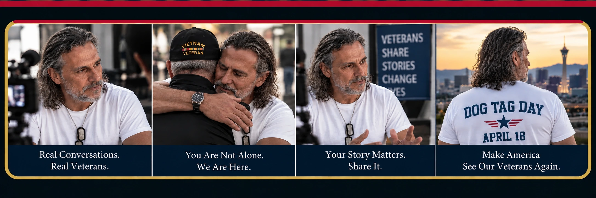
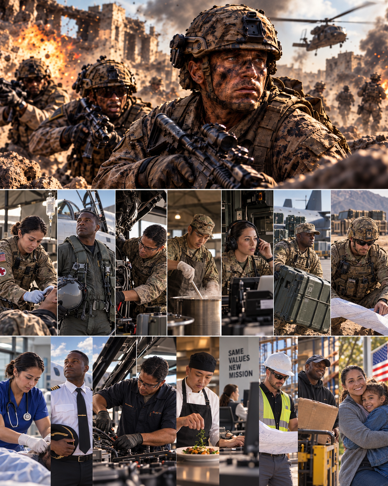

1. We listen.
We start with the veteran—not a form. What do they need? What have they already tried? What is getting in the way?

Learn about the mission, what your support helps build, and how to get involved.
Automated answers to common questions. Contact Ronnie and the foundation for a personal reply.
Helping veterans is at the heart of Dog Tag Day. Our goal is to listen, help veterans find the right support, and stay connected as they take the next step.
We’re building a year-round veteran support program. Sharing stories and bringing communities together on April 18 support that purpose.



A veteran may need help with benefits, food, housing, transportation, employment, home repairs, legal assistance, or simply finding the right organization to call. Dog Tag Day Foundation is building a year-round support program designed to make that process easier.

We start with the veteran—not a form. What do they need? What have they already tried? What is getting in the way?
We identify established veteran, nonprofit, government, and community services that fit the need.
We help the veteran understand the next step and where to go.
We check back. Did they reach someone? Was the problem solved? If not, we help identify another path.
Dog Tag Day began with one realization: too many veterans become invisible once the uniform comes off. Dog Tag Day exists so veterans can be seen while they are still here to tell us who they are, where they served, who they remember, and what their service meant.
Behind every pair of dog tags is a person, a sacrifice, and a story worth hearing. Your donation helps Dog Tag Day reach veterans, preserve their stories, and build communities that acknowledge their service.
Donate Through the Honor Jar